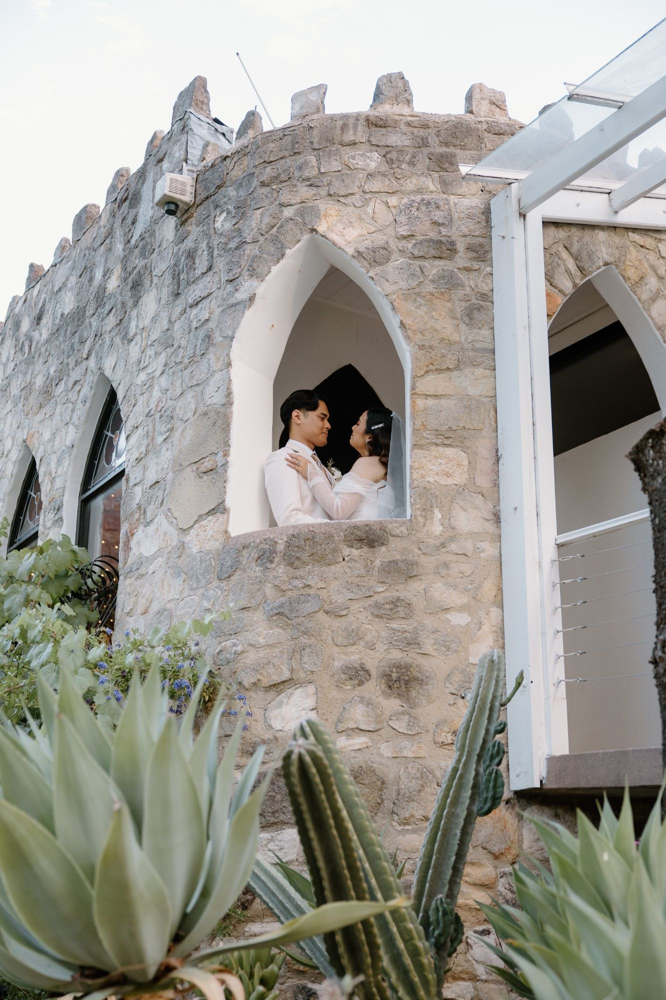

About
Hi, I’m Charne.
I’m the photographer behind Sunday Light, based in Adelaide.
I photograph people the way they are on a good day: close, laughing and lit by a low sun. Weddings, couples, bumps, newborns and families, on the beach, in the hills or at home.
I keep sessions relaxed. I’ll give you easy prompts, tell you where to stand when the light is right and let the rest happen. My favourite sessions are the ones where people forget I’m there.
I love it when a family comes back as their story grows: the proposal, then the bump, then the first family photo on the beach.
How I work
What you can count on.
Light first
I plan every outdoor session around the last hour of sun.
Prompts, not poses
Easy direction that keeps you moving, so you look like yourselves.
Here for the long run
From your wedding to your family photos years later.

Enquiries
Tell me what you’re planning.
Weddings, couples and families across Adelaide, from the coast to the hills.
Check my dates